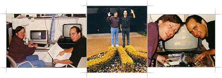
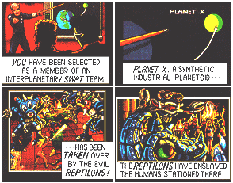
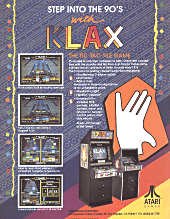

|
The video game celebrates its
18th birthday this year, and Atari Games, the company that
started it all with Pong, is still going strong. His
pockets bulging with quarters, Gary Whitta takes a look
inside the video game industry's greatest innovator.
It's said that the Japanese
take everyone else's ideas and do them smaller, better and
cheaper. But when it comes to arcade games, it's everyone
else who follows in their footsteps. These days you can't
go into an arcade without overdosing on games from the
land of the rising coin slot, with giants like Sega,
Taito, CapCom, SNK, and Konami all household names to the
arcade aficionado.
But
while the Japanese seemingly continue their domination of
the coin‑op industry, and (almost) all others are crushed
in their attempts to stop them in their tracks, there is
one American company that not only manages to hold its own
against the great oriental steamroller, but also carries
on as one of the arcade industry's great innovators
That company is Atari Games.
While the name Atari might
suggest a company of Japanese origins, it prefers hot dogs
and Mom's apple pie to sushi and Mama‑Sans' lychees any
day of the week. Founded by electronics wizard and
visionary Nolan Bushnell in the early 70s, Atari takes its
name from the classic Japanese board game Go. Anyone
who's played the game will know that an Atari is the Go
equivalent of check in Chess. The well‑known logo is a
representation on Japan's famous volcano Mount Fuji ‑
Bushnell chose it because he was a great fan of the
Japanese genericism, and wanted to give his firm an
oriental flavour.
Atari erupted in 1972 with the
bat 'n' ball classic Pong. What is generally accepted as
the world's first video game was designed by Bushnell
himself, and was a runaway success ‑ for the simple reason
that nobody had ever seen anything quite like it before.
Since then, Atari's enjoyed massive success with games
like Breakout (1976), Asteroids (1979), Missile Command
(1980), Centipede (1981), Pole Position (1982), Star Wars
(1983), Marble Madness (1984), Paperboy and Gauntlet (both
1985), Super Sprint (1986), and Hard Drivin' (1989) ‑ all
of which served to ensure that Bushnell's baby was no
one‑game wonder. But even so, the company served up its
fair share of obscurities in its time ‑ ever heard of
Cloak & Dagger, Arabian, Canyon Bomber or Smokey Joe? No?
We thought not. (AEX – Most of the “obscure” games
mentioned were not widely available in Europe).
Before long, Atari moved out
of the arcades and into the homes with the launch of the
VCS 2600 console and, later, its first home computers in
the form of the 400 and 800 range. Since then Atari's
been responsible for the forgettable XL/XE machines and of
course the more memorable ST range.
(AEX – We apologise for the
use of the word “forgettable” with reference to the XL and
XE computers by the author!)
Unfortunately, these days
Atari isn't the one big happy family you might think ‑ in
fact it's practically divorced from itself. Bushnell sold
Atari to movie giant Warner Communications in the late
70s, and it wasn't until the early 80's that ex‑Commodore
boss Jack Tramiel arrived on the scene to buy it back but
only half of it. The story goes that Tramiel was only
interested in the home computing side of Atari, as he was
hoping to buy the Amiga from its developers and release it
as an Atari machine. For this reason, he only bought the
computing arm of the company (known as Atari Corporation),
leaving Atari Games as a separate company.
Today, Atari Games and Atari
Corporation rarely interact ‑they are even based in
completely different offices, and in a sense they are
actually in competition. When Atari Games decided to move
into the expanding home market by producing software,
Atari Corporation stepped in to tell its 'sister' that it
wasn't allowed to use the name Atari in the home computer
market. For this reason, Atari Games came up with its own
publishing label - Tengen, which again comes from the
board game Go. The Tengen is the name given to the centre
of the board. And as Domark's General Manager John
Kavanagh explains, that's why you won't find the Atari
Games name or logo on any of Domark's long line of Atari
coin‑op conversions ‑ Tramiel bought the rights to use the
Atari name on consumer products as part of the terms of
the sale - Atari Games, therefore, has to market its
software under a different name. (AEX – Domark were a UK
software publisher and marketed practically all the Atari
Game home computer conversions under the Tengen name).
That, however, hasn't put
Atari Games off in the least. With over 140 (count 'em)
coin‑ops under its belt, a string of its own arcades in
the USA and over 400 people employed worldwide, Atari is
one of the most prolific games manufacturers in the world
today ‑ and one of the wealthiest, with the company
expecting to rake in over 100 million dollars this year
alone!
It's at Atari Games'
headquarters in Milpitas, California, that the games are
conceived, developed and produced. You name it ‑ Star
Wars, Paperboy, Gauntlet, Super Sprint, Hard Drivin'… they
are all the work of the development personnel based there.
One member of that team is the
man behind some of the company's biggest successes over
the last few years ‑ 31‑year old Mark Stephen Pierce, one
of Atari's principal games designers, who comes from a
rather unlikely background: he was an artist long before
he ever went near a computer.
Mark's career as a binary
Boticelli began while studying at the School Of Arts
Institute in Chicago. It was here that the two vocations
he currently excels in came together... " In my final year
the school got a ZGrass computer which I started playing
around with, drawing and animating with it. I did some
animations of talking faces, which were seen by the guy
who invented the machine. He asked me to come and work
for him, so I did, writing animation demos for trade
shows, like the Consumer Electronics Show. I was just
making characters run around on screen to show off the
capabilities of the Astrocade machines."
"I also co‑wrote a game in
1982 called Professor Pac Man, which was basically a
multiple choice questions and answers game with animated
sequences. The Astrocade was very similar to the hardware
inside the Bally coin‑ops of the time. Professor Pac Man
sold about a thousand copies, and after that, in 1984, I
started a company called Macromind, writing productivity
tools, basically music and art utilities, for a while, and
then I sold out my share in the company, and then wrote
the platform game Dark Castle for the Macintosh.”

The move to Atari Games came
about in 1986 when Mark moved to California: "I knew that
there are more computers per square mile there than
anywhere else in the country." California is the home‑base
of just about every major developer and publishing company
in the States, including Cinemaware, Lucasfilm, Epyx,
Spectrum HoloByte, Electronic Arts, Activision, hardware
manufacturer Apple ‑ and of course Atari.
Atari has earned itself a
reputation for originality since its inception, with
innovative wares such as Lunar Lander, I Robot, Marble
Madness, Gauntlet, and Cyberball all breaking new ground
and inspiring many ‑ including Mark: "I joined Atari
because I wanted to produce something different something
more challenging. There are so many shooting and fighting
games in the arcades, and that just wasn't the thing I
wanted to get into."
Mark's first project for Atari
was the ageing race‑and‑destroy classic RoadBlasters, for
which he produced the graphics and co‑designed with
programmers Bonnie Smithson and Richard Moore over the
course of a year. "I still play RoadBlasters," Mark
confesses. "I think it's a great game because it's so
simple. I really like the combination of driving and
shooting. Ever since we did RoadBlasters I've been really
into race games, but only in the arcades. I think racing
games at home lose the feel because of the lack of a
steering wheel."
After RoadBlasters, Mark set
about with RoadBlasters programmer Bonnie Smithson
producing his biggest and most time‑consuming project to
date ‑ Escape From The Planet Of The Robot Monsters
(which, for the record, boasts the longest game title in
coin‑op history). From conception to completion, Mark and
his team spent over two years on Escape. But the
inspiration for such an escapist concept has been around
for even longer ‑ since Mark's childhood in fact.

"My Dad sells comic books for
a living, and has done since I was a boy, so I grew up
with them. I've always been fascinated by them, and in
particular the concept of an interactive comic book
something where you could actually influence the story
rather than just following along with it. That's what I
was trying to do with Escape ‑ it's not perfect, but I
think it's getting close to the idea.
As for the scenario, I was
influenced mainly by the 60's Science Fiction B‑movies
like Plan 9 From Outer Space, The Day The Earth Stood
Still and all those other really terrible movies."
While Escape doesn't offer
anything radically different in the gameplay stakes ‑ it's
just a matter of shooting the robots and rescuing the
prisoners Mark believes the presentation sets it apart:
"The isometric viewpoint is perfect ‑ it works so well
because by looking down into a room from the corner you
can see just about everything there is to see. It worked
in Zaxxon, 720° and Populous and I think it works here
too. It was easier for us to do as well ‑ we just took the
old Isometric Playfield Generator that was written for and
used in Marble Madness and put it to work here ‑ the basic
routines that run Escape and Marble Madness are one and
the same."
After working on Escape for
over two years (which Mark puts down to the sheer size of
the game), he's now a little tired of the project and was
glad to see it completed.
Even so, he still feels
there's room for improvement: "Looking back on Escape, I'm
pleased with it. But if I was starting again on it now,
I'd like to do things a bit differently. For a start I'd
want more flare and more action to make the whole thing
more hectic. At the moment it's not as pacey as I'd have
liked. And I would have liked to have given the player
more control over Jake and Duke by giving them more
combat‑like moves, rather than just shooting away. I like
the games where you've got a whole array of fighting
moves, and that would have worked and added atmosphere to
Escape." The chance of a second attempt seems unlikely:
"It took over two years to put together ‑ there's no way I
want to go through all that again just to produce one
game. All I wanted to do next was produce something
playable, compact and relatively quick to develop."
So he did. The result was the
comparatively serene Klax, aimed at the same market as the
classic mental agility test Tetris.
Our Marketing people saw that
Tetris had created a niche in the market, and I could see
the same thing by watching people play it in the arcades.
What I noticed most was that it was attracting older
players ‑ probably because it's more of a thinking game.
And I could see that people were getting satisfaction out
of playing it. Tetris has a strange appeal ‑ it's simple,
and the gameplay is well balanced between the tension of
building something up and the relief of removing lines."
With the seed implanted, Mark
set about producing ideas for gameplay ‑ by which time
clones wore already appearing. They were mostly just the
same game presented differently and any twists in the
gameplay failed to generate the same kind of tension as
the original ‑ let alone improve on it: "With Klax I
wanted to produce something along the same lines, and so
create a similar sort of appeal, while giving it a
gameplay style all of its own.” No easy task.
"I knew that to create a game
similar in style to Tetris, the rules had to be simple,
but I wanted to do something with, a little extra to ft as
well." That little extra manifests itself in the shape of
gravity.
With Tetris, blocks fall when
fines disappear, but only by a single line ‑ there's no
real gravity, and so it's impossible to set up 'chain
reactions'. With Klax however, Mark did Newton proud by
incorporating a true sense of gravity. The tiles are
supposed to be stacked as they would for real, so when you
take some away, the tiles above fall down until they land
on another, this allows the player to create a Klax that
in turn creates another by the very act of the relevant
blocks disappearing and causing others to fall.
The idea of making lines of
three or more came from Tic‑Tac‑Toe, which is why Atari is
calling Klax the 'Tic‑Tac‑Tile' game. "I think it's got
enough original elements of its own to not be called just
another Tetris clone. One thing I really like about Klax
is that it's a video game only ‑ there's no way it could
be done in any other format." (AEX – We think the Atari
Lynx conversion is probably the best, but we could be a
little biased in that opinion!).

It probably won't come as any
great surprise to learn that even though Mark is pleased
with the way Klax has turned out, he still feels that
there's room for improvement. "When we came to giving Klax
a name, I wanted to call it something that reflected its
simplicity ‑ something short, and in complete contrast to
Escape. So I sat down with Dave Akers and said: 'Okay,
we've got five minutes to come up with a title.' Dave
just came out with Klax, and we liked it because it was
short and it also sounded like the klack‑klack sound of
the tiles as they roll down the screen. Looking back, I
think that's an idea that could have been taken further."
From the amount of knowledge
we have of how arcade machines are developed, we might as
well just assume that Mr Atari comes along, sprinkles his
magic pixie dust on an empty cabinet and presto! A new
game… No such luck ‑ putting together a coin‑op is much
the same as putting together a home computer game... but
on a grander scale, as Mark reveals: "When we're thinking
about designing a new game, we have to listen to our
Marketing people, who inform us of what's popular and
what's likely to make money in the arcades, which is what
happened with Klax."
But that's not to say that
Mark and his team don't have freedom when deciding what to
do, and if they want to create something totally off the
wall they can ‑ look at Escape From The Planet Of The
Robot Monsters.
With a game concept 'invented'
a Project Leader has to assemble an interested party of
half a dozen or so people, comprising a programmer,
graphic artist, animator, musician, and hardware engineer.
The PL gives them all an idea of what has got to be done.
"The first thing that's done
is that the project is sketched out in rough ‑ game type,
objectives and so on, and a schedule is made up for the
team to work to, as it's vital they have the game finished
by a certain time."
This might sound like the
Project Leader has an easy time of it, but Mark is quick
to prove otherwise: "A Project Leader oversees all the
work on the game, but he often also contributes to it in
his own way. I was Project Leader on Escape and Klax, but
I also designed both games and did the graphics. And
believe me, you have to take care of everything from
making sure the work goes according to schedule to
checking that the heating duct above the programmers is
running at the correct temperature!"
Now that the idea has become a
real game design, the team can start work actually writing
it. Even during the technical stages there's not a great
deal to differentiate between coin‑op and home computer
game development...
"All Atari coin‑ops today are
written in C ‑ that's the most popular language with the
programmers here, I guess. The actual programming work is
carried out on standard terminals, and then transferred
into our VAX machines where it's compiled and compressed.
Finally it's downloaded from there through an EPROM burner
and onto the hardware for the game that the engineer has
put together. Every coin‑op's hardware is different partly
because each game is different, and partly as a form of
copy protection.
Mark's graphics are produced
on a PC ‑ but using Atari's own specially written utility:
RAD (Rendering and Animation Design). "It's basically a
standard paint tool with some animation facilities. I
design and draw on the PC before uploading everything to
the VAX to be compressed."
An Atari game takes, on
average, around a year to produce ‑ but then an average
can come from two extremes, which is certainly in Mark's
case - Escape took over two years to put together, whereas
Klax was written in just four months!
Mark feels that game design is
the most difficult and time‑consuming, and yet most
rewarding task: "With an arcade game you have to be very
careful with the design. What you're trying to do is
create something that people will want to play and keep
playing. If you go to see a movie, you pay your six
dollars and go in ‑ if you decide halfway through that you
don't like it, there's not a lot you can do about it as
you've already paid to see it. If you buy a piece of
software, you pay your 30 dollars then take it home, and
again, if you don't like it, it's too late you've already
paid. But with an arcade game you only have to put in a
quarter, and if you decide in your first game 'Urgh, this
sucks', you can leave it and you've only spent 25 cents."
So if an arcade game is to
recoup its investment it's got to hook people from the
very beginning and hold on tight. "You have to keep the
task simple, so that the potential player will look at it
and say "I can do that', while graphically it has to look
sexy and inviting. That's really all you need to get
somebody playing, but keeping them playing is the hard
part. It's vital that you get the level of difficulty
right ‑ if a game's too tough, the player will give up,
and if it's too easy you could have one person playing all
day on just one quarter. The ideal level of difficulty is
one that makes a quarter last about a minute and a half."
But unlike appearances, the
level of difficulty is a much more demanding deception, as
arcade players vary greatly in their levels of skill and
patience. So before a game is released it's played
extensively by the teams at Atari and then put on 'field
test', where a few prototype machines are placed in
arcades around the country and the reaction to them is
graded.
"You can normally tell at the
very start if a coin‑op's going to sell ‑ we always keep
one test machine running in the lab, and if it's rarely
played by the people here, it's probably not going to do
well in the arcades either. Fortunately Klax, which has
just been released, has always got a queue of people
waiting to play it here, so we have a pretty good feeling
about it!"
Only when a machine goes on
field test can the public's response be gauged, so
naturally Atari makes the best use it can of the time that
the machine's 'out on trial'. The prototype machines used
are equipped with special video recorders that videotape
the games played on it. When the machines are recalled
the tape is played back so that the team can see if
players are exploiting any potentially disastrous bugs or
unexpected design flaws and iron them out before the
machines go on release. In addition, a computer printout
provides pages of statistics that are dissected to find
out just how good people are at playing the game.
But at the end of the day, all
that counts is the amount of money a machine takes ‑ or
'coindrops' as Mark refers to them. "A machine has to make
money within its first six weeks or it's not going to be
successful. If an arcade owner orders a few machines, and
they don't start making money quickly, he won't order any
more ‑ and he could well tell his arcade owner friends who
won't order any at all."
So just how 'big' does a
coin‑op have to be to be classified as a success? "These
days, anything that sells over 10,000 units is fantastic,"
Mark reveals. "Although back in the early days of the
industry, machines could be expected to do a lot more than
that. Tempest, for example, took over 30,000 orders in its
first DAY on release! Williams' Defender has sold over
50,000, and Ms Pac Man 123,000!
So why the slump? "I think
because when this business first started, we were dealing
with a brand new technology, so there was a lot of
excitement and a certain amount of novelty value. And
also at the time, the people who played arcade games were
a lot older ‑ around 18 to 25, and so they had more money
to spend than the average 14 year‑old arcade player of
today. Now the big novelty is gone, but I think at least
the business is much more sane now. And there's still the
occasional massive hit, Gauntlet is probably one of the
biggest sellers that Atari has ever had."
Mark admits to being a great
fan of the classic coin‑ops of yesteryear. Defender,
Tempest and Galaga rank amongst his favourites, but what
does he think of the machines commonly found in today's
arcades? "Most of the games over here are either
horizontally‑scrolling blasters or sideways scrolling
combat games, which I think is a shame. I think that
while they're not at all original, they'll always be a
market for them, so the companies will just keep on making
them. It's like rock 'n' roll, most of the popular music
in the charts today isn't too good, but they'll keep
cranking it out because that's what is in demand."
"I'm not sure about the
Operation Thunderbolt style gun games. I don't believe
that playing those games is going to turn anyone into a
killer or anything like that, but even so I don't think
it's a good idea to make people feel comfortable about the
idea of having a gun in your hand and shooting things."
At home, Mark's recently been
up to his elbows in SimCity. "I like it ‑ you get a
certain kind of satisfaction out of playing it. It's kind
of like tending a garden."
And the future? What kind of
technology is going to be eating coins in years to come?
"I'm not sure, but I do have a few ideas about the kind of
thing I'd like to see. I'd like to expand what's playable
in the arcades by moving away from shoot 'em ups and the
like and do something else. One idea that might work
would be an RPG coin‑op ‑ each player would buy a card
that would be inserted into the machine to start the game.
That card would have the player's character stored on it ‑
all the information about strengths, skills, objects
carried ‑ and the machine would read from and write to the
card accordingly. With that system you could carry your
character around in your back pocket and carry on your
game whenever you see a machine."
Sadly, we aren't likely to see
anything like that for a while yet, and for the moment,
Mark prefers to look more to the immediate future. "Klax
has just started to ship, and from what we've heard so
far, it's already doing well. One machine in Manhattan is
taking 400 dollars a week! I don't want to jinx anything
by saying that Klax is going to be as big as Tetris, but I
certainly hope that it will."
So what's next? "I'm really
not sure. After Klax I think I'd like to do a bit more of
an action game." Beyond that, Mark doesn't really know ‑
but it's a sure‑fire bet it's worth waiting for… Even it
he spends two years writing it!
 |